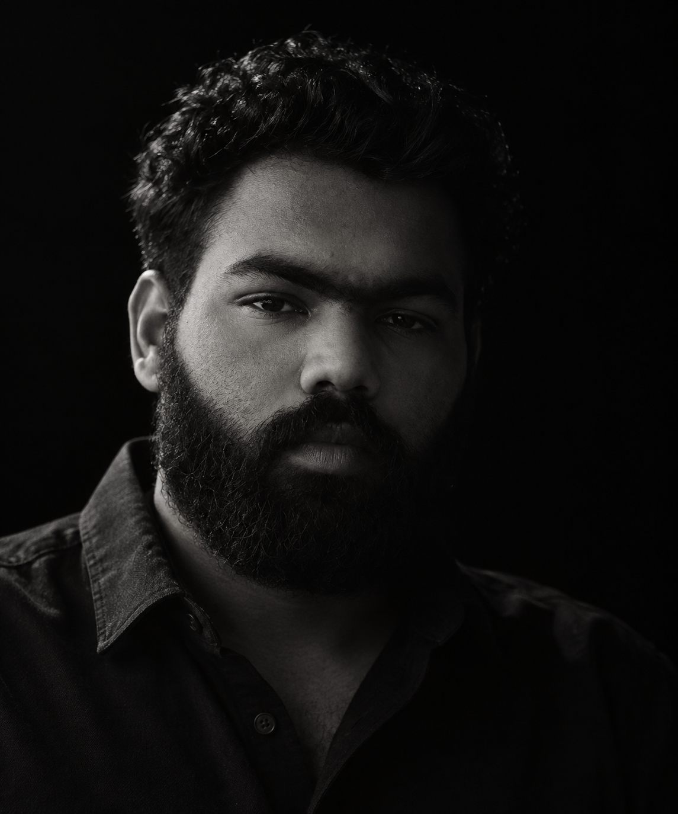

Abdul Habeeb (25)
Master’s student & developer · he/him
Saarbrücken, Germany
“
I like turning complex systems and datasets into experiences people can understand and use with confidence.
Data science and full-stack development with a focus on clarity, reliability, and thoughtful interfaces.
Download resume ↓
Master’s student & developer · he/him
Saarbrücken, Germany
I like turning complex systems and datasets into experiences people can understand and use with confidence.
React · Vue.js · JavaScript
Node.js · REST APIs
PostgreSQL · MySQL
Data analysis · Data cleaning
Data visualization
Machine learning fundamentals
Analytical reports
Reusable documentation
Cross-team collaboration
Full-Stack Developer · Werkstudent
Responsive applications, reusable components, REST API integrations, and backend functionality.
Research Assistant · Saarbrücken
Transportation datasets, visualizations, and analytical reports for evidence-based research.
Front-End Developer · India
Full-stack client projects with JavaScript, React, backend services, and database integrations.
St. Etienne, France
Exploring practical approaches to building better web experiences with an international group of peers.
Tallinn, Estonia
Working with data and collaborative problem-solving around technology for a more sustainable future.
Kaunas, Lithuania
Connecting artificial intelligence concepts with visual ways to communicate patterns and insights.
Master’s in Data Science and AI · Germany
Developing deeper expertise in data-driven systems, artificial intelligence, and analytical problem-solving.
Bachelor’s in Computer Science · India
Graduated with a CGPA of 1.4, converted to the German grading system.
Estonia Hackathon
Won first place for developing a sustainable green development process with an international team.
Germany Hackathon
Won second place for developing a university flashcard app inspired by Anki.
Communication Manager
Supporting communication and community connection within an international student network.
Web Lead · India
Leading web-focused initiatives and helping fellow students learn through practical development.